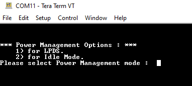

Introduction
This example demonstrates usage of Radar Power Management Framework for getting into Low Power Deep Sleep(LPDS) or Idle3 states.
Supported Combinations
| Parameter | Value |
| CPU + OS | m4fss0-0 freertos |
| Toolchain | ti-arm-clang |
| Boards | xWRL6432-evm |
| Example folder | examples/drivers/power/power_modes |
Using SDK with SysConfig
A GUI tool SysConfig is used to configure different modules and peripherals of the example. Using this tool, users can select and customize different modules and peripherals. The SysConfig tool will generate the code for initializing and configuring these modules. This configuration is saved to a file called example.syscfg for every example. To know more about how to use SDK with SysConfig, Visit this page
Using SDK with SysConfig
Steps to Run the Example
- When using CCS projects to build, import the CCS project for the required combination and build it using the CCS project menu (see Using SDK with CCS Projects).
- When using makefiles to build, note the required combination and build using make command (see Using SDK with Makefiles)
- Launch a CCS debug session and run the executable, see CCS Launch, Load and Run
- Open serial terminal (like Tera Term etc.). Example allows the user to either enter LPDS or Idle3 state via command line options.

- LPDS: Entering '1', will make the chip to get to LPDS state for 50 seconds (time can be configured by changing the macro in example file).
- Idle: Entering '2', will make the chip to get to Idle3 state for 25 seconds (time can be configured by changing the macro in example file).
- LPDS wakeup:
- LPDS wakeup after 50 seconds using Sleep Counter.
- LPDS wakeup using SYNC_IO is supported. To use this, switch 1.6 has to be configured off. Pressing USER_SW switch (S3) will cause LDPS exit.
- LPDS wakeup using SPI CS is supported. To use this, switch 1.6 has to be configured on. connecting SPI CS to ground will cause LPDS exit.
- Example doesn't support wakeup using UART and RTC.
- Idle3 wakeup: exit after 25 seconds using RTI timer interrupt mapped to WIC.
See Also
POWER
Sample Output
Shown below is a sample output when the application is run,

 1.8.20
1.8.20